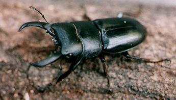

ヒラタクワガタ
ヒラタクワガタはヒラッタクワガタ？ヒラタクワガタの名前はもともとヒラッタクワガタだった。もちろんそんなはずはありません。はずはないのですが、そう思えてならないのです。これまで採集(さいしゅう)したヒラタクワガタのほとんどが拾った（ひろった…北摂地域では、ひらったとも言います）ものだからです。
小学生から中学生のころ（今からおよそ30年ほど前）に、やはり虫が好きでクワガタムシをとりに行った記憶(きおく)は、今でもはっきりと残(のこ)っています。そのほとんどは、兵庫県(ひょうごけん)の猪名川町(いながわちょう)でのことです。ミヤマクワガタ・ノコギリクワガタ・カブトムシ・シロスジカミキリ・ミヤマカミキリなどがたくさんとれたことを覚えています。でも、その記憶の中にオオクワガタやヒラタクワガタはありません。小学生のころ、猪名川の河川敷（かせんじき）（池田市桃園）で平たいクワガタムシがあまり太くない木に何匹もとまっていたことを覚(おぼ)えています。それがヒラタクワガタだったのかも知れません。そのころは、クワガタムシが好きだったにもかかわらず、平たくて、クヌギでない木にとまっているのが気味悪く感じられました。ほとんどとらなかったように思います。北摂の平地では、クワガタムシはほとんどクヌギにいます。次に多いのがコナラで、後はアラカシやサクラの幹のあなの中にかくれているものです。それ以外(いがい)の木の細(ほそ)いえだにとまっているものはその時以来(いらい)見たことがありません。今から考えても、あのクワガタムシがとまっていた木が何だったのかよく分かりません。ヤナギの仲間だったと考えられるのですが、この辺の地域では不思議(ふしぎ)なことです。九州(きゅうしゅう)では、平地でもヤナギの木にクワガタムシがいるそうです。山の上の方では、ヒメオオクワガタなどはヤナギの仲間にとまっています。しかし、このあたりでは聞かない話です。
高校生になってオオムラサキをとりに箕面市(みのおし)の下止々呂美(しもとどろみ)にときどき出かけるようになりました。オオムラサキのおまけにオオクワガタがとれます。昼間でもあなの中から大きなあごを出しているのです。両手でグッとひっぱってひきずり出すことができるものだけもってかえりました。ただし、大きなものをとったのは一度だけでした。クヌギのみきにあながあるとほとんどその中にいたのですが、ひっぱってもなかなか出てきませんでした。そのころは、かんたんにあきらめていました。そんなにめずらしくもなかったのです。今なら…。しかし、このころもヒラタクワガタをとった記憶はありません。
学校の先生になってから、ときどき虫の話を書く機会(きかい)がありました。ところが、高校生の時以来ほとんどクワガタムシやカブトムシをとりに行かなかったので、それらについての話がほとんど書けませんでした。子ども達には特に喜(よろこ)んでもらえる虫なのですが…。
その時から初夏(しょか)になるとクワガタムシのことが気になるようになりました。そんなある日、細河(ほそかわ)小学校のげんかんロビーに一匹のクワガタムシのめすがころがっていました。ミヤマやノコギリではないようです。さっそく家に帰ってから大阪市立自然史博物館(しぜんしきくぶつかん)の本で確かめてみました。やはりヒラタクワガタのめすでした。はらがわのむねのまん中に特徴(とくちょう)があります。1986年6月16日のことでした。
ところが数日後の23日、子どもが教室の横の道に落ちていたといって1匹のおすのヒラタクワガタを見せに来てくれました。その日から、下を向いて歩く生活が始まりました。なんとこの日、また校舎(こうしゃ)の中で1匹めすを拾いました。学校は夜遅くまで電気をつけていることがあるので、光にさそわれて入ってくるようです。7月7日には死んだばかりのめすを、7月11日には死にかけのおすを見ました。この年はその後ヒラタクワガタに出会うことはありませんでした。
次の1987年も、同じように校舎の中を歩いているものをnis.先生が持ってきてくださるなどいくつかの記録ができました。ヒラタクワガタは6月中旬から7月の中旬の夜に活発に活動する。そのようなことも分かってきました。また、車の通らない道でクワガタムシが死んでいるのは鳥が食べるのだということも知りました。カラスがつついているのを目撃することもありました。秋田県(あきたけん)では、ミヤマクワガタが夜水銀灯（すいぎんとう）に集まり、朝までそのまわりでころがっているものはスズメにつつかれて頭だけがしばふをくわえていくつも残っていました。どこの地域でもこのようなことがあるのかも知れません。
ここ数年、また自然のじょうたいのヒラタクワガタを見ていません。やはり初夏の早朝の郊外（こうがい）を下を向いて歩かなければ会えないようです。
「生き物たちのページ」にもどる